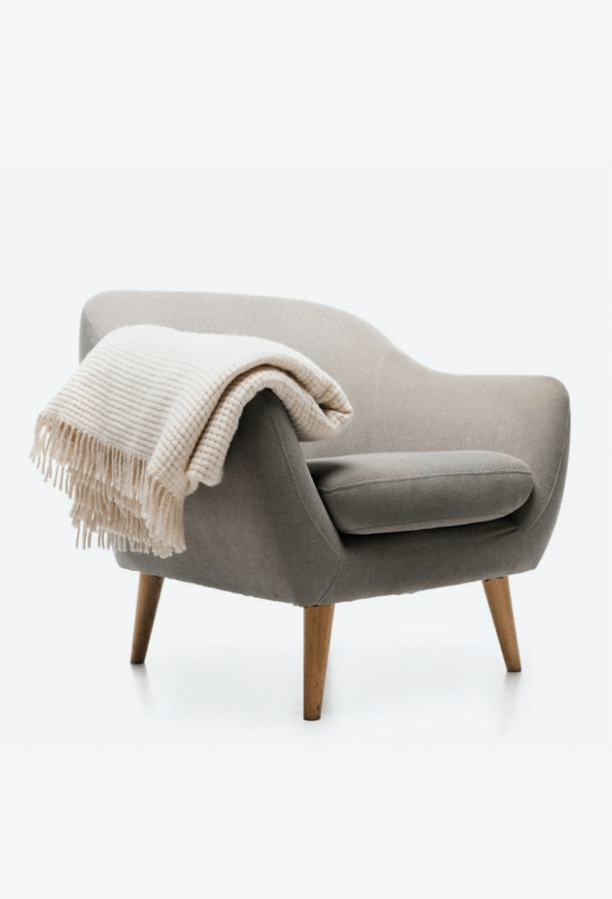

<div class="modal">
  <div class="modal__image">
    
  </div>
  <div class="modal__content">
    @if (modalService.modalContentState$ | async) {
      <app-sign-up-form></app-sign-up-form>
    }
    @else {
      <app-sign-in-form></app-sign-in-form>
    }
  </div>
  <div class="modal__close" (click)="closeModal()">
    <svg xmlns="http://www.w3.org/2000/svg" width="24" height="25" viewBox="0 0 24 25" fill="none">
      <path fill-rule="evenodd" clip-rule="evenodd" d="M5.29289 5.46648C5.68342 5.07595 6.31658 5.07595 6.70711 5.46648L12 10.7594L17.2929 5.46648C17.6834 5.07595 18.3166 5.07595 18.7071 5.46648C19.0976 5.857 19.0976 6.49017 18.7071 6.88069L13.4142 12.1736L18.7071 17.4665C19.0976 17.857 19.0976 18.4902 18.7071 18.8807C18.3166 19.2712 17.6834 19.2712 17.2929 18.8807L12 13.5878L6.70711 18.8807C6.31658 19.2712 5.68342 19.2712 5.29289 18.8807C4.90237 18.4902 4.90237 17.857 5.29289 17.4665L10.5858 12.1736L5.29289 6.88069C4.90237 6.49017 4.90237 5.857 5.29289 5.46648Z" fill="#6C7275"/>
    </svg>
  </div>
</div>

<div class="modal-backdrop" (click)="closeModal()"></div>